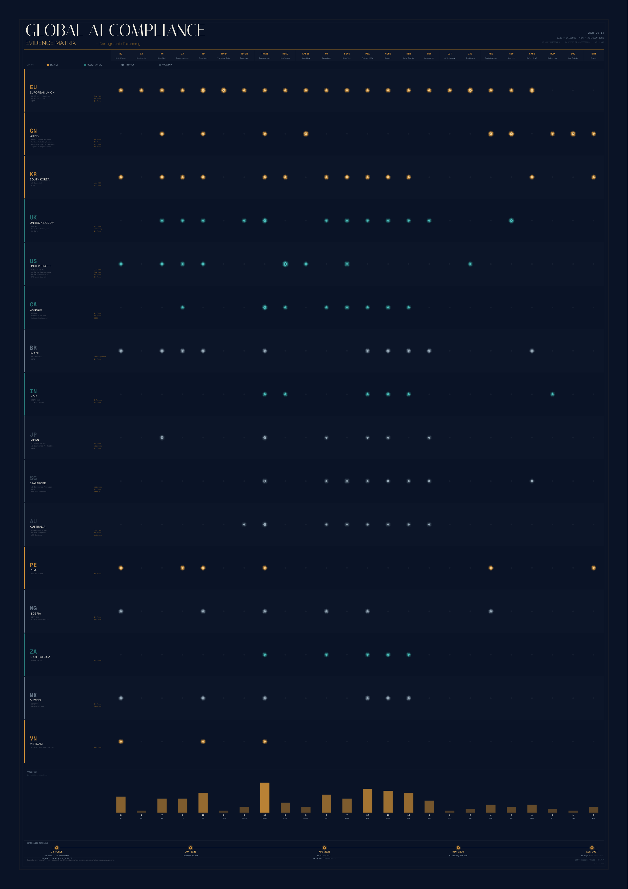

01
System Transparency Document
Architecture, purpose, limitations, performance metrics, and risk classification justification.
Open-source toolkit for gathering compliance evidence across global AI regulations. 22 evidence templates, 6 interactive assessment tools, and an autofill engine. Built to hand to your legal team.
Hover over countries to see their AI regulation status, key legislation, and enforcement timelines.
Detailed regulation research files cover each jurisdiction with specific laws, requirements, deadlines, and developer guidance.
Each template maps directly to specific legal requirements. Fill them in and hand the completed set to your legal or compliance team.
Browser-based tools for compliance areas that require human judgment. No server needed. Load your config, make decisions, export results.
A file-based pipeline with no server dependencies. Everything runs locally.
Major AI regulation enforcement dates through 2027. The toolkit includes 90-day alert thresholds for each.
| Date | Jurisdiction | Regulation | Status |
|---|---|---|---|
| 2025-02-02 | EU | AI Act — Prohibited practices + AI Literacy (Art. 4) | In Force |
| 2025-08-02 | EU | AI Act — GPAI obligations | In Force |
| 2026-01-01 | US-CA | SB 53 Frontier AI + AB 2013 Training Data Transparency | In Force |
| 2026-02-05 | UK | DUA Act — ADM reforms + Deepfake offence | In Force |
| 2026-06-30 | US-CO | Colorado AI Act (SB 24-205) | Upcoming |
| 2026-08-02 | EU | AI Act — Full applicability (high-risk, transparency, conformity) | Upcoming |
| 2026-08-02 | US-CA | AI Transparency Act (SB 942) | Upcoming |
| 2026-12-01 | AU | Privacy Act ADM transparency obligations | Upcoming |
| 2027-08-02 | EU | AI Act — High-risk AI in regulated products | Upcoming |
Complete cross-reference of 45+ laws across 16 jurisdictions mapped to 24 evidence categories.

# Clone the repository
git clone https://github.com/justice8096/LLMComplianceSkill.git
cd LLMComplianceSkill
# 1. Edit your project config
cp tools/compliance-config.json tools/my-config.json
# Edit my-config.json with your project details
# 2. Open interactive tools in your browser
# (load my-config.json into each tool, save results)
# 3. Run autofill
node tools/autofill.js
# 4. Collected evidence is in output/
ls output/Important Disclaimer
This toolkit supports compliance evidence gathering. It is not legal advice. Always have completed templates reviewed by qualified legal counsel. Regulations may have changed since the last research update (March 2026).